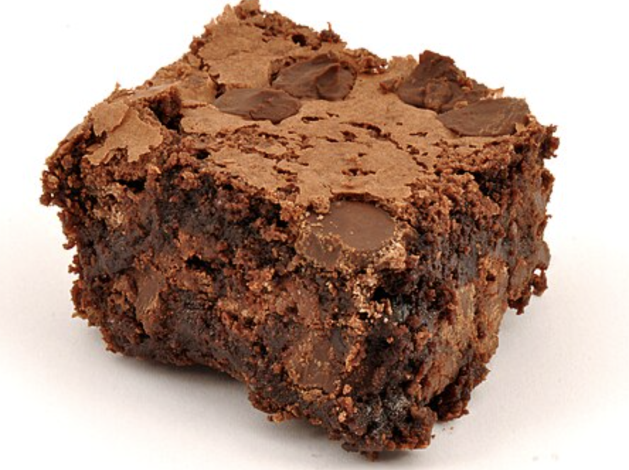

for years I was craving the perfect brownie but no matter how hard I searched
I couldn't find anything that came close. So I spent three months testing
and eating many diffrent baches of brownies that were only fine until I
found this recipe. "Whoa, I've never tasted any brownie like this before
said my sister, Morgan.

| ingredient | amount |
|---|---|
| sugar | 1 1/2 cups |
| flour | 3/4 cup |
| cocoa powder | 2/3 cup |
| powered sugar | 1/2 cups |
| choclate chips | 1/2 cup |
| sea salt | 3/4 teaspoons |
| eggs | 2 |
| olive oil | 1/2 cup |
| water | 2 tablespoons |
| vanilla | 1/2 teaspoon |
instrunctions
- preheat oven to 325 degrees and spray a 8x8 baking dish with parchment paper with cooking spray
- using a medium bowl combine sugar, flour, cocoa powder, powdered sugar, choclate chips, and salt
- in a large bowl, whisk together eggs, olive oil, water, and vanilla
- sprinkle the dry mix over the wet mix and stir until mixed. repeat until fully mixed
- pour the batter into the pan and smooth the top using a spatula. next, bake for 40-48 minutes and let cool when finished
- enjoy!